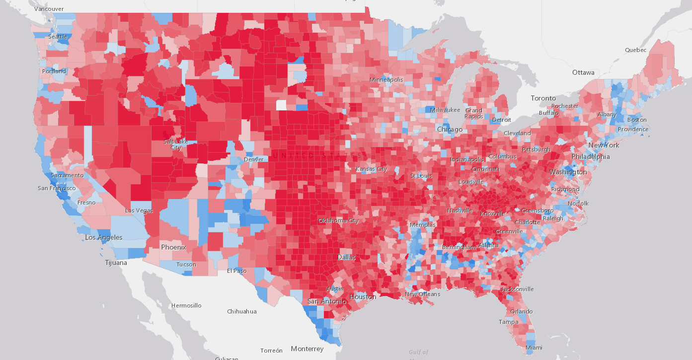
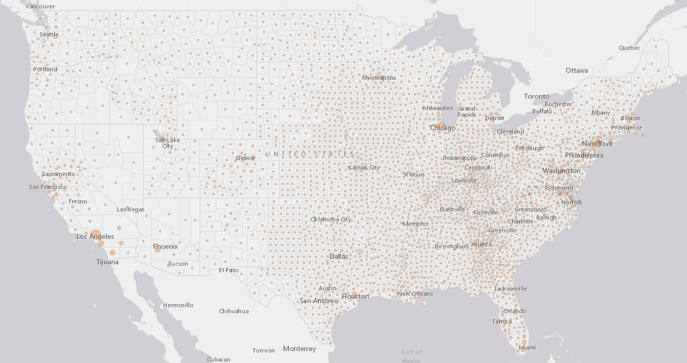
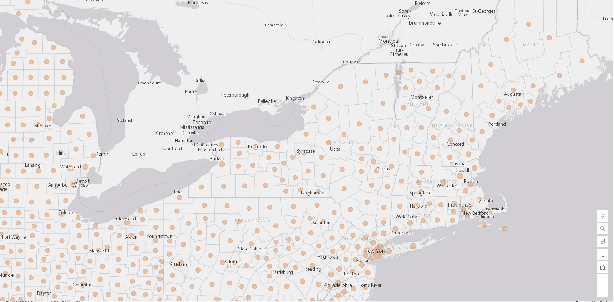
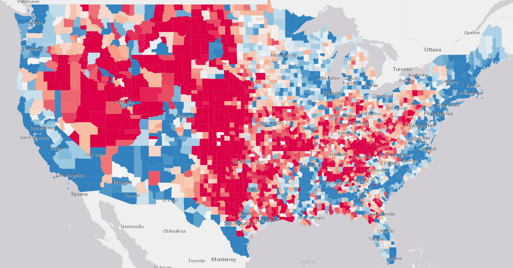
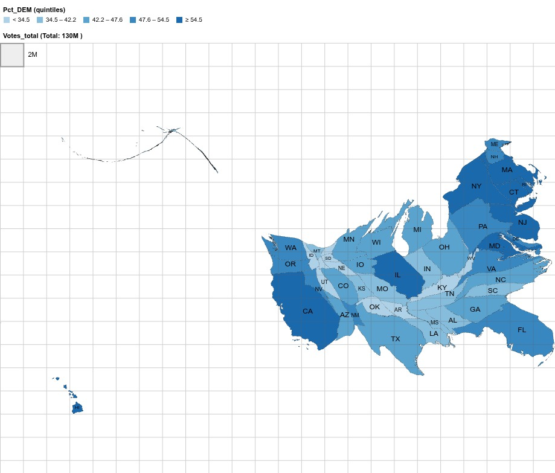
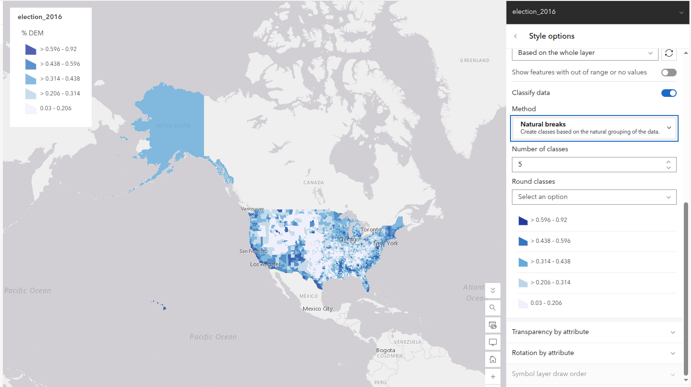
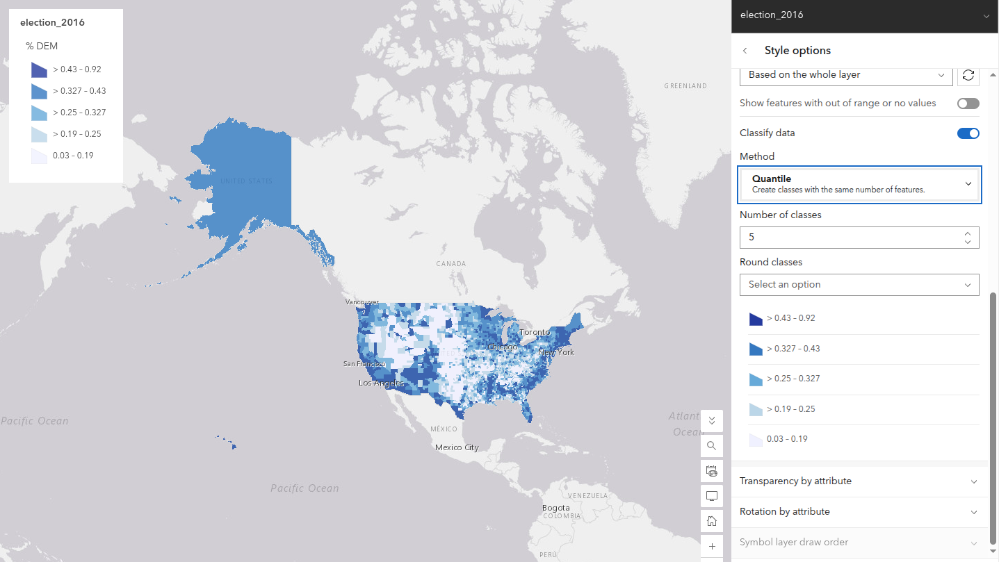
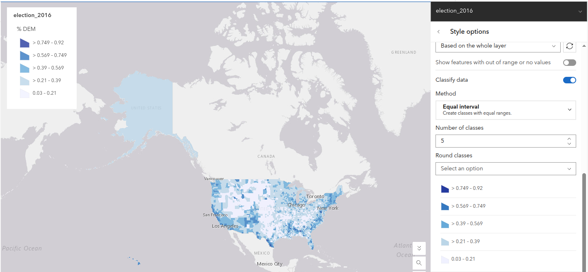

Lab 2 · September 2026
One dataset, four maps: How display rules change the 2016 election map
The question
Where was voting support geographically concentrated across United States counties in the 2016 presidential election?
The data
The main dataset is a public teaching layer called election_2016, published on ArcGIS. It has 3,139 county records. When checking the table before mapping, there are three clear problems:
- Empty column: The table has a field called
DEM_votes, but it is completely empty in all 3,139 rows. The real vote count is stored in a different column calledvotes_DEM. - Wrong label on units: The columns
DEM_perandGOP_perare shown with the labels% DEMand% GOP. But the numbers inside are proportions between 0 and 1, not percentages. For example, Los Angeles County is listed as0.7141instead of71.41%. If a map legend copies this label directly, it is off by a factor of 100. - Alaska repeated 28 times: Alaska does not report presidential votes by borough; it reports by state legislative districts. The person who made this table took the total vote for the whole state (93,003 Democratic votes, 130,413 Republican votes, and
0.377159Democratic share) and copied those exact same numbers into all 28 boroughs. On a map, this makes Alaska look completely uniform. In addition, adding up the column counts Alaska 28 times.
The reconciliation gap: If you add up the columns in the table, you get 65,030,312 Democratic votes and 64,716,166 Republican votes. If you remove the 27 duplicate copies of Alaska, the totals drop to about 62.5 million Democratic votes and 61.2 million Republican votes. But the official certified result for the country was 65,853,514 Democratic votes and 62,984,828 Republican votes. The table is missing several million votes and does not match the official totals. It works well to teach mapping rules, but it is not accurate enough to state official election results.
The method
I mapped this same table of 3,139 counties in four different ways to show how the choice of map type changes what the viewer sees:
- Predominant category: Uses color (hue) to show who won each county (red for Republican, blue for Democratic), and uses transparency to show how large the winning margin was.
- Graduated symbols: Uses circle size to show the total number of votes cast (
Total_Votes). This separates the number of voters from the physical land area of the county. - Standardised score (z-score): Uses a two-color diverging scale to show how far each county was from the average county. I used this expression:
These z-scores are measured against the unweighted average of all 3,139 counties (mean = 31.74%, standard deviation = 15.27%), not against the national popular vote.// Standardised score for % DEM, 2016 var mean = 0.3174; var sd = 0.1527; return ($feature.DEM_per - mean) / sd; - Cartogram: Uses state-level totals from the csv used to generate the map (with Alaska's duplicates removed) in the tool go-cart.io. Each state is resized by its total votes (
Votes_total) and colored by its Democratic share (Pct_DEM) divided into five equal groups (quintiles).
The map
Live ArcGIS Map: Four maps of 2016
Interactive ArcGIS web map: Open Lab 2 Web Map in Map Viewer.
Map 1: Winner by county

Map 2: Total votes using circle size


Map 3: Standardised score (difference from county average)

Map 4: State cartogram resized by votes

Live Go-Cart Cartogram Embed
Interactive state-level election cartogram embedded directly from go-cart.io.
Sensitivity check: Three classification schemes
Grouping the Democratic vote proportion (DEM_per) into 5 classes using different mathematical rules changes the impression of the map completely:



Classification sensitivity table
| Scheme | Four break values | Counties in top class | What this map appears to argue |
|---|---|---|---|
| Equal interval | 0.210, 0.390, 0.569, 0.749 | 43 | Strong Democratic support is very rare and exists only in a few isolated cities. Almost the whole country looks solidly Republican. |
| Quantile | 0.190, 0.250, 0.327, 0.430 | 642 | Democratic support is widespread across the country. Any county with at least 43% Democratic vote gets grouped into the highest category. |
| Natural breaks | 0.206, 0.314, 0.438, 0.596 | 198 | Shows natural groupings: strongly conservative rural areas, competitive suburbs, and heavily Democratic urban centers. |
Comparing the four maps
| Map | Visual channel | What it makes easy to see | What it hides or distorts |
|---|---|---|---|
| 1 · Predominant category | Hue (color) | Which candidate won the most votes in each county. | Hides population density and third-party voters (over 10% of votes in 78 counties). Big, empty rural counties dominate the view. |
| 2 · Graduated symbol | Size | Where the largest numbers of voters live, without letting big rural counties take over. | Circles overlap heavily in dense urban areas like New York, making them hard to read. |
| 3 · Standardised score | Value (lightness) | Which counties voted above or below the national county average. | The neutral center (z = 0) is a 31.7% Democratic vote, which is not an election tie (50%) or the national popular vote (~48%). |
| 4 · Cartogram | Area | Gives each voter equal visual weight by resizing states to match their vote count. | Distorts geographic shapes and borders, making states harder to recognize. |
Disclosure block
| Report | Choice |
|---|---|
| The scheme, named | Natural breaks |
| The class count, and why | 5 classes; it shows real groupings in the data while keeping the colors easy to tell apart. |
| One alternative scheme, mapped | Quantile; setting the top cut at 0.43 put 642 counties into the top class instead of 198. |
| The claim you would still make if scheme changed | High Democratic vote shares stay concentrated in big metropolitan centers and minority-majority rural counties, no matter which grouping method is used. |
What I found
There is a large contrast between land area and human votes. Donald Trump won 2,555 counties (81.4%), while Hillary Clinton won 408 counties (13.0%). But Clinton won the national popular vote by over 2.8 million votes. Map 1 makes the country look almost entirely red because large rural counties take up most of the page. Loving County, Texas (64 voters) takes up more space than Kings County, New York (over 600,000 votes). The classification scheme also changes the story: Equal Interval shows only 43 counties in the top class, while Quantile shows 642 counties in the top class by labeling a 43% minority vote as "high".
What this does not show
None of these maps show third-party voters, even though third parties won more than 10% of the vote in 78 counties. They do not show people who did not vote or who were not allowed to vote. They also treat each county as a single flat unit, hiding differences between cities and suburbs inside the same county. Lastly, the dataset repeats Alaska's state total across 28 boroughs and is missing several million votes compared to the official national results.
Reflection and AI-usage
The reflection and AI-usage disclosure have been kept private and submitted through Brightspace rather than published on this page.
← Back to all labs